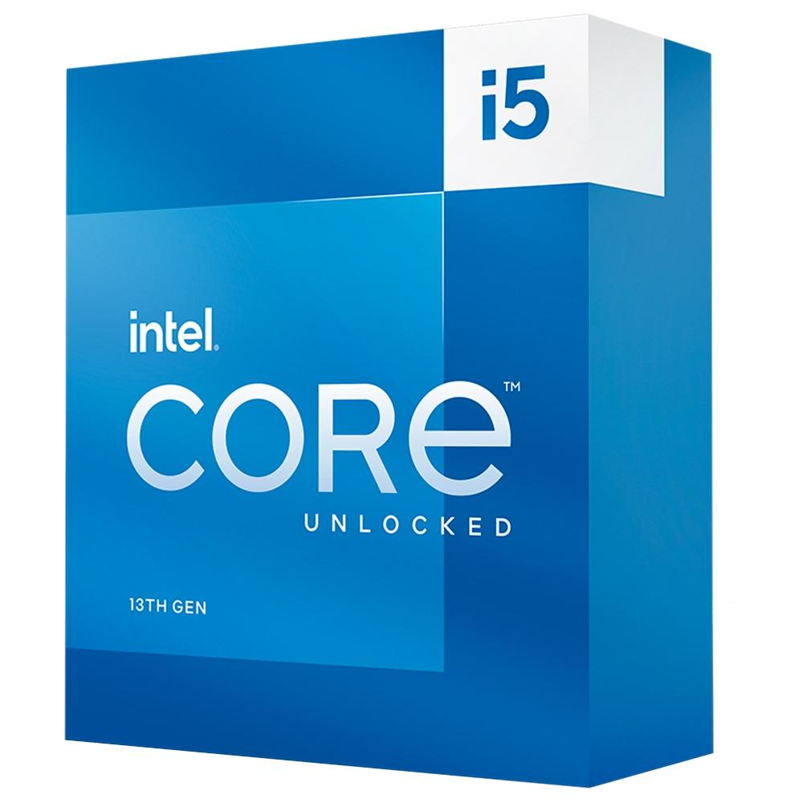

Processador
O processador é a unidade central de processamento de um computador (CPU), que funciona como o cérebro do computador, pois interage e faz as conexões necessárias entre todos os programas instalados. Neste processo, ele também interpreta as informações enviadas pelos programas, realiza diversas operações, inclusive gerando a interface que nós interagimos quando usamos um computador.
Informações sobre o produto
Uma das características mais importantes do processador é justamente o clock. Em geral, afirmamos que a velocidade do clock indica mais agilidade na CPU. Isso pois a velocidade do clock mede o número de ciclos por segundos que a CPU executa. Logo, a velocidade do clock é medida em gigahertz.
Intel Core i9-13900KF 24 núcleos
(8 P-core + 16 E-cores)5,8 GHz

À vista: R$ 5.000,00
À prazo: em 10x de R$ 500,00
AMD Ryzen 9 5900X,3.7GHz
(4.8GHz Max Turbo)

À vista: R$ 3.800
À prazo: em 12x de R$ 316,66
Intel Core i5-13600K, 13ª Geração
5.1GHz 14 Núcleos
